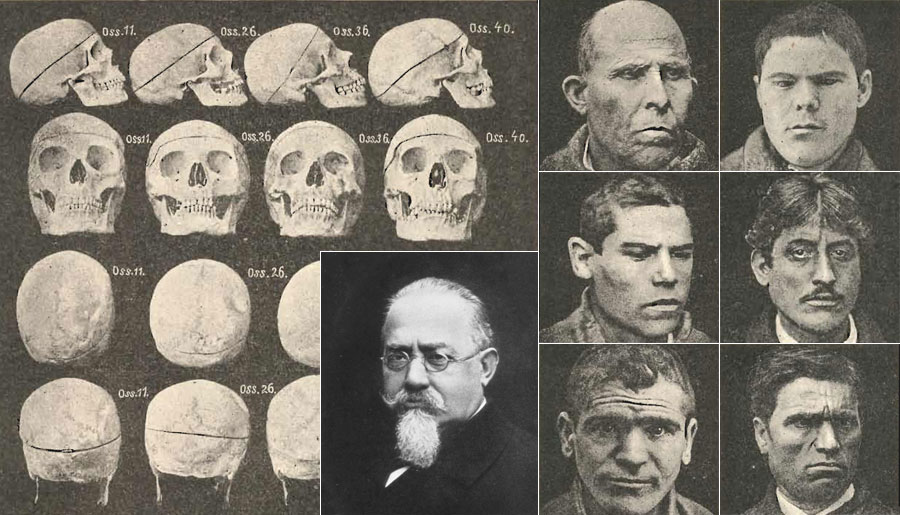

Durante lo que se conoce como “Período de Organización Nacional” (1853-1880) la Ciudad de Buenos Aires se vio envuelta en una serie de cambios específicos vinculados al desarrollo de un moderno sistema de transporte y a un proceso de inmigración masiva que desembocó, en última instancia, en una intensificación de la prostitución en los años posteriores.
En un contexto de globalización e interdependencia regional e internacional de la economía, ciudades como Buenos Aires se constituyeron en lugares sumamente estratégicos para el transporte de mercancías. En particular, este centro urbano funcionó como un nodo que unió la economía local al mercado internacional gracias a la centralización de terminales ferroviarias y su articulación con el puerto (Ben, 2012). En este contexto, sumado a un proceso de industrialización cada vez mayor, la demanda de mano de obra para el trabajo pesado no se hizo esperar. Como resultado, dentro de la población inmigrante, el porcentaje de hombres con respecto al de mujeres fue notablemente mayor (Ben, 2012). Sin embargo, pese a la gran demanda de mano de obra, las condiciones en las que se encontraban los nuevos inmigrantes muchas veces los empujaba a realizar actividades por fuera de la ley para asegurar la subsistencia. Así, la línea que separaba las actividades laborales legales de las actividades ilícitas era muy fina (Scarzanella, 1999).
Esta situación fue terreno fértil para que las críticas y la oposición al proyecto de apertura económica y cultural a Europa, propuesto por la generación del ’37 echaran fuertes raíces. Estas críticas, además, fueron realizadas en un contexto de “higienización” de la ciudad. Algunos círculos intelectuales vinculados a la medicina, a la sociología y a la política, comenzaron a establecer una asociación entre la criminalidad, los inmigrantes y los obreros. Personajes como Ramos Mejía o José Ingenieros, sostenían que la inmigración trajo consigo ideas perjudiciales para el desarrollo moral de la sociedad argentina, por lo que era necesaria una “limpieza” para la construcción de la “raza argentina” (Scarzanella, 1999; Salessi, 1995).
Además, el auge higienista se encontró en estrecha articulación con el surgimiento de la Antropología Criminal argentina. Reforzando el sentido común, la Antropología Criminal argentina comenzó a realizar estudios sobre la ilegalidad en Buenos Aires, que tuvieron como resultado la construcción de “identikits criminales”, en donde se asociaba a un “tipo criminal” con diferentes grados de degradación o regresión moral, biológica e incluso intelectual (Scarzanella, 1999). La supuesta condición diferencial que llevaba a cometer un delito era asociada con diferentes grupos étnicos o comunidades de inmigrantes. De esta manera, en los sectores rurales la “indisciplina y la pereza al trabajo explican el delito (razzias, homicidios, estallidos de violencia) entre indios y mestizos” (Scarzanella, 1999:27), adquiriendo componentes claramente raciales. Variables similares eran utilizadas cuando se teorizaba sobre el criminal de la metrópoli cosmopolita,aunque quizás con un componente racista algo menor. Aquí los diferentes “tipos criminales” o los diferentes “grados de degeneración” fueron explicados por la relación que el criminal tenía con el trabajo y por su (in)capacidad nata para ejercerlo.
Césare Lombroso (1835-1909) y fotos suyas tomadas para el Museum of Criminal Anthropology
El caso de la prostitución no escapó a la perspectiva biologicista de la criminología argentina. Estos estudiosos consideraban que “la prostituta criolla es la compañera de los hombres de la “mala vida”, con quienes a menudo colabora en sus delitos” (Scarzanella, 1999:24). La degeneración biológica como defecto original e innato es la explicación a priori. Supusieron la existencia de una constitución mental que impedía que estas mujeres (y cualquier otro tipo de criminal) fueran capaces de ejercer un trabajo.
Ahora bien, la prostitución legalizada, muy ligada a la trata de personas, era ejercida principalmente por mujeres rusas, francesas y austrohúngaras y para 1915 eran 995 las inscritas en los registros oficiales. Curiosamente, el 61% de estas “(...) se declaraba mucamas, modistas, planchadoras, etc.” (Scarzanella, 1999:24).
Se calcula que fueron entre 7.000 y 8.000 las trabajadoras sexuales clandestinas para ese mismo año, quienes en su gran mayoría eran argentinas o inmigrantes latinoamericanas (Revilla, 1903; en Scarzanella, 1999). Teniendo en cuenta todo lo dicho hasta aquí, podemos preguntarnos lo siguiente: ¿Cuál fue el impacto de la criminología y el higienismo en las políticas de salud vinculadas a la prostitución? Y, por otro lado, ¿Es posible que las nuevas ideas sobre la inmigración hayan afectado las posibilidades de acceso al mercado regulado de la prostitución? No pretendo dar una respuesta definitiva a estas preguntas dado que el presente trabajo no fue realizado a partir del análisis de fuentes, sino a través de una revisión bibliográfica. Dicho esto, mi objetivo es poner en contexto el problema planteado y dejar las preguntas abiertas para posteriores discusiones.
Integración de los servicios de sanidad pública durante el siglo XIX
Para entender el marco jurídico vinculado a las políticas de salud en el cual tuvo lugar el inicio de la regulación de la prostitución en Buenos Aires (1875-1936),es importante tener en cuenta el rol y el impacto del higienismo en la ciudad y en el proyecto de nación impulsado a fines del siglo XIX. Y para no cerrarme en lo meramente discursivo (lo cual trataré en el apartado siguiente), intentaré mostrar cómo, en este mismo período, los servicios de sanidad pública tendieron a centralizarse, de modo que las autoridades a cargo de dichos organismos adquirieron una autonomía creciente en cuanto a las decisiones sobre las políticas de salud pública.
Entrado el año 1852, por el Decreto No 2.315, se crea en la Ciudad de Buenos Aires el Consejo de Higiene Pública “encargado de todo lo relativo a la sanidad pública en general, la inspección de la vacuna, la sanidad de los puertos, la vigilancia sobre la venta de medicamentos, la policía sanitaria y demás objetos que detallará su reglamento” (Grau, 1954:8). No es sino hasta el año 1870 que podemos observar cómo el proceso de centralización va tomando forma. El decreto de 1852 fue reforzado con la Ley No 648 el 27 de julio de 1870, reglamentando la superintendencia técnica del Consejo de Higiene en cuestiones sanitarias de jurisdicción municipal. Antes de esta ley, el Consejo debía dirigirse al Ministerio de Gobierno para que, a través de los jueces, se hicieran efectivas las medidas que aconsejaba. Desde la sanción de la Ley No 648, el Consejo podía dirigirse directamente a las autoridades municipales.
Foto de un "sulfurozador", usado para desinfectar las calles. Ciudad de Buenos Aires, comienzos del siglo XX.
Sin embargo, no tenía la potestad de aplicar penalizaciones. Sólo debía denunciar a los infractores a los tribunales. Otro obstáculo que se le presentó al Consejo de Higiene Pública con respecto al desarrollo de una amplia acción de sanidad pública, planificada y técnicamente dirigida, fue la disposición hispánica hecha constitucional en la Provincia, que establece que las autoridades municipales tienen a su cargo “el ornato y la salubridad” de los respectivos municipios (Grau, 1954).
Ya en el año 1888 se promulgó la Ley No 2.123, la cual amplió la jurisdicción del ahora llamado “Consejo Superior de Higiene”. A través de esta nueva ley, se le otorga “la superintendencia de la medicina y ramas afines del arte de curar y la vigilancia de hospitales, hospicios y demás establecimientos sanitarios públicos y privados. Se amplía, también, su acción al mejoramiento sanitario de las clases obreras, distintas manufacturas y trabajos agrícolas que puedan ser dañosos a su salud” (Grau, 1954:10. Cursivas mías). En el art. 9° se establece que el Consejo proyectará un reglamento especial de higiene “al que deberán someterse todas las poblaciones de la Provincia, pudiendo las municipalidades hacer las modificaciones que juzguen convenientes en su aplicación, según lo requieran las necesidades locales, pero con previa aprobación del Consejo Superior”. Ya para el año 1897, a través de la Ley No 2.636, se crea la Dirección de Salubridad Pública, “con fuerza para intervenir en todos los asuntos de carácter sanitario y reprimir las infracciones” (Grau, 1954:11). De esta manera, se subsume a la jerarquía administrativa del Ministerio de Gobierno.
Luego de 1897, a la Dirección de Salubridad Pública se le presentan las siguientes dificultades a resolver: “la higiene de los talleres, la salud de los obreros, problemas que interesan a la Dirección General de Salud Pública y al Ministerio de Trabajo y Previsión; las enfermedades del ganado y el problema de los tambos que además de ser considerados por la Dirección de Ganadería, dependiente del Ministerio de Asuntos Agrarios, también lo son por el Ministerio de Hacienda, Economía y Previsión; los abastos de agua potable a las poblaciones y a los desagües urbanos de los desechos domiciliarios e industriales, que interesan a la Dirección de Obras Sanitarias del Ministerio de Obras Públicas y a diversas reparaciones del Ministerio de Salud Pública, etc.” (Grua, 1954:13). Vemos, desde lo dicho, que la tendencia moderna lleva a la concentración y unificación de los servicios de sanidad pública, los cuales adquieren un creciente margen de acción y de independencia en la toma de decisiones.
Rol del higienismo y la antropología criminal en la construcción del nuevo “proyecto nacional”
El higienismo tomó fuerza en la Argentina durante el período entre 1870-1900, luego de las epidemias de fiebre amarilla y cólera, convirtiéndose en una línea de pensamiento clave para el proyecto argentino de modernización de fines del siglo XIX (Salessi, 1995). La idea higienista de nación y de ciudad-moderna reflejada en una constante analogía entre un cuerpo metafórico y una ciudad, se vio materializada en un primer momento, en “obras sanitarias” dirigidas a “separar líquidos y flujos salubres e insalubres que al ponerse en contacto originaban las enfermedades” (Salessi, 1995:18) y en el proceso de centralización explicado en el apartado anterior.
Durante el período de “higienización” iniciado en 1874, las obras públicas sanitarias habían sido financiadas con un monto que representaba cerca del 60% de la deuda externa contraída. Ya para la década de 1890, la promoción del avance de las políticas sanitarias se hizo notable con la Memoria de J. M. Ramos Mejía, presidente del Departamento Nacional de Higiene, y con los Anales del Departamento Nacional de Higiene. Es a partir del año 1892 que a la preocupación por el bienestar y protección del cuerpo de las personas frente a las enfermedades se le suma la preocupación por defender el cuerpo-nación de la “insalubridad” criminal. La explicación de la insalubridad se desplaza desde las condiciones locales como causa y motivo de la enfermedad hasta una representación que vinculaba a los síntomas dañinos con “lo extranjero” y extraño al cuerpo-nación.
Esta denuncia sobre el mal social y moral, sin embargo, no tomó fuerza sino hasta el auge de la criminología y antropología criminal en argentina, en la primera década del siglo XX, hecho manifiesto en la publicación de los Archivos de Criminología, Medicina Legal y Psiquiatría (1902). La Antropología Criminal argentina toma como base los trabajos de Lombroso, Ferri y Garófalo, autores que se convirtieron en la cuna de esta disciplina (Scarzanella, 1999; Alcalde, 2017). Fue Lombroso quien tuvo mayor repercusión a nivel internacional, siendo particularmente bien aceptado en Argentina, incluso luego de que sus postulados hayan sido descartados en Italia. La idea central de la escuela lombrosiana, propuesta en L’uomo delincuente (Lombroso, 1875), supone la posibilidad de detectar rasgos atávicos que explicarían la conducta criminal y permitirían la identificación de un potencial delincuente. De esta manera, este autor italiano buscó cambiar el enfoque del Derecho Penal de la época, entendiendo que el carácter criminal se hereda y no está condicionado por el ambiente social, sino biológicamente determinado (Alcalde, 2017). Otros escritos importantes de la Antropología Criminal italiana fueron los de Garófalo y su obra Criminología (1885), donde se explaya sobre el “delito natural”; y los de Ferri, quien, en L’italia bárbara contemporánea (1898), negaba la existencia del libre albedrío y sostenía que el delito está determinado por elementos físicos, biológicos y sociales (Alcalde, 2017).
Morgue de Buenos Aires. En la foto se ilustra el impacto del higienismo en la vestimenta de los trabajadores.
En un contexto de tensión entre los poderes locales y el gobierno nacional, la crisis económica de 1890 y los levantamientos militarizados ocurridos entre 1890 y 1894 en diferentes puntos del país (como los levantamientos colonos suizos de Santa Fe o las rebeliones y levantamientos de San Luis, Tucumán, Corrientes y Buenos Aires), la política higienista funcionó como una herramienta de control social bajo el manto de la modernización humanitaria que se promovía “más allá de las banderas políticas”. De esta forma, la identificación del malestar social con los “delincuentes” que habitaban dentro de las fronteras nacionales se enfatizó una vez que los inmigrantes ya estaban fuertemente establecidos en el país (Salessi, 1995).
Los focos de virulencia desde donde se desprende y disemina la patología social que afecta a la “personalidad colectiva” fueron, según los nuevos criminólogos, los movimientos obreros y las organizaciones sociales anarquistas y comunistas. Cabe mencionar al respecto la curiosa (aunque para nada inocente) definición, de la mano de autores como José Ingenieros, del anarquista como “tipo psicológico” producto de “(…) una sociología, un medio ambiente y una herencia biológica que se remontaba a una sexualidad “ilegal”. El anarquista que asociado a la prostitución sumaba significados políticos y “morales” encarnó los temores de las clases burguesas hacia la clase baja (…)” (Salessi, 1995:118).
Es Fancisco de Veyga quien, en su ensayo llamado Anarquismo y anarquistas. Estudio de antropología criminal publicado en 1897, conjugó con mayor fuerza las ideas de la Antropología Criminal argentina. A lo largo del escrito, Veyga se esforzó por distinguir entre un socialismo de “gente culta y de alta condición intelectual”, inserto en las instituciones gubernamentales e integrado a los proyectos políticos oficiales; y un anarquismo con predominio de “gente ignorante, de proletarios” (Vyega, 1897:447; en Salessi, 1995). El médico y criminólogo asoció a la criminalidad con los movimientos sociales anarquistas (y a todos los sectores subalternos de la sociedad argentina) y definió un problema de “higiene social” que debía estar a cargo del cuidado de la policía.
Consideraciones finales: la LAPS y la Ley de Profilaxis Antivenérea
En un principio se planteó la posibilidad de que la Antropología Criminal argentina y el higienismo fueron los responsables de allanar el camino para la prohibición de la prostitución en el año 1936. Con todo lo dicho hasta aquí, vimos como la prostitución pasó de ser un fenómeno que respondió a un proceso de aumento de la población masculina en un contexto de industrialización creciente, a una problemática de estado bien concreta. Entendiendo que “el higienismo incluía en su haber, además del abordaje de la enfermedad, una vertiente social influida de conceptos éticos y morales intervencionistas, basados en la prevención y la profilaxis” (Miranda, 2015:6), la tarea de la “defensa social” asumida por higienistas como José María Ramos Mejía, Cornelio Moyano Gacitúa, José Ingenieros y Fernando de Veyga, fue el hacer frente al “desorden social” provocado por los movimientos obreros anarquistas y al “desorden moral” del que eran expresión las enfermedades venéreas asociadas a la prostitución.
Es en este sentido que la proclama eugénica realza al control de las enfermedades venéreas transmitidas por las prostitutas a los “padres de familia” como medio para la protección del matrimonio, la familia, la nación y por consiguiente a la futura e inasible “raza argentina” en su conjunto. Ya entrada la década del 1920 es posible identificar la fuerza creciente del eugenismo, fenómeno materializado en la fundación de la Liga Argentina de la Profilaxis Social (LAPS) en el año 1921 bajo la presidencia de Alfredo Fernández Verano. Dicha institución nace con el objetivo de promocionar medidas profilácticas en pos de “evitar la propagación” de enfermedades venéreas y de esa manera augurar por la mejora y preservación de la raza. Una de las medidas concretas fue la instalación de la Estacón Profiláctica en la Ciudad de Buenos Aires y en Bahía Blanca en donde todo aquel que había visitado una trabajadora sexual tenía la posibilidad de “desinfectarse” (Miranda, 2015).
Es en este sentido que la proclama eugénica realza al control de las enfermedades venéreas transmitidas por las prostitutas a los “padres de familia” como medio para la protección del matrimonio, la familia, la nación y por consiguiente a la futura e inasible “raza argentina” en su conjunto. Ya entrada la década del 1920 es posible identificar la fuerza creciente del eugenismo, fenómeno materializado en la fundación de la Liga Argentina de la Profilaxis Social (LAPS) en el año 1921 bajo la presidencia de Alfredo Fernández Verano. Dicha institución nace con el objetivo de promocionar medidas profilácticas en pos de “evitar la propagación” de enfermedades venéreas y de esa manera augurar por la mejora y preservación de la raza. Una de las medidas concretas fue la instalación de la Estacón Profiláctica en la Ciudad de Buenos Aires y en Bahía Blanca en donde todo aquel que había visitado una trabajadora sexual tenía la posibilidad de “desinfectarse” (Miranda, 2015).
Bibliografía y fuentes
- Alcalde, I. (2017). La antropología criminal dentro de la antropología social. Un nuevo enfoque para su revitalización. Universidad Nacional de Córdoba, España.
- Grau, A. C. (1954). La Sanidad en las Ciudades y Pueblos de Bs. As. Biblioteca del Archivo Histórico de la Provincia de Buenos Aires
- Miranda, M. A. (2015). Sobre las “asalariadas del amor”: prostitución y norma (Argentina y España, fin-du-siècle). Trabajos y Comunicaciones.
- Salessi, J. (1995). Médicos, maleantes y maricas. Higiene, criminología y homosexualidad en la construcción de la Nación Argentina. (Buenos Aires: 1871-1914). Biblioteca Estudios Culturales. Universidad Nacional de Córdoba. Primera edición.
- Sanchez, A. (2016). El día que se prohibieron los prostíbulos. En La Izquierda Diario. [En línea].Buenos Aires, disponible en: http://www.laizquierdadiario.com/El-dia-que-se-prohibieron-los-prostibulos
- Scarzanella, E. (1999). Ni gringos, ni indios. Inmigración, criminalidad y racismo en la Argentina: 1890-1940. Bernal, Universidad Nacional de Quilmes.